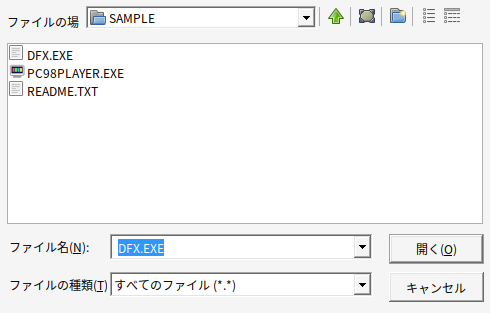
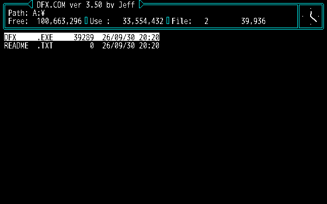

基本的な使い方
ハードディスクにインストールした状態のゲームのフォルダをコピーして、その中で PC98PLAYER.EXE を実行する、いちばん基本の遊び方です。
1-1. 用意するもの
- Windows 10 / 11（64bit）のパソコン
PC98PLAYER.EXE- PC-98 のゲームを、ハードディスクにインストールした状態のフォルダ（実機やほかの環境でインストールしたものをコピーしたもの。例:
C:\PC98\DOUKYU2）
実機の ROM、MS-DOS 本体、フロッピーやハードディスクのイメージは要りません。
1-2. はじめての起動
PC98PLAYER.EXE をコピーPC98PLAYER.EXE をダブルクリックフォルダに設定ファイル PC98PLAYER.INI が無いとき（初回）は、ゲームのフォルダを開いたファイル選択の画面が出ます。
最初に実行するファイル（.BAT・.EXE・.COM など）を選んで「開く」を押してください。

選んだファイル名を Start= に書いた PC98PLAYER.INI が作られ、そのままゲームが始まります。次からは、ダブルクリックするだけでゲームが始まります。

[PC98PLAYER] Start=NANPA2.BAT
- 選択の画面を「キャンセル」で閉じたときは、起動しそうなファイルを推測して INI を作ります。
- 違うファイルが選ばれた・見つからないときは、INI の
Start=をメモ帳で書き直して、もう一度起動してください。 - サブフォルダの中のファイル（例:
GAME\GAME.EXE）を選ぶと、そのフォルダをカレントにして起動します。
GAME.BAT など）を Start= にすると、サウンドドライバの常駐なども含めて実機と同じ手順で起動します。1-3. 操作方法
| Windows のキー・操作 | PC-98 での意味 |
|---|---|
| 英数字・記号キー | 物理的な位置どおり（JIS 配列基準） |
| F1〜F10 | f･1〜f･10 |
| Alt | GRPH |
| カタカナひらがな / 変換 / 無変換 | カナ / XFER / NFER |
| Home / End | HOME CLR / HELP |
| PageDown / PageUp | ROLL UP / ROLL DOWN |
| Insert / Delete | INS / DEL |
| Pause または ScrollLock | STOP |
| PrintScreen | COPY |
| ウインドウをクリック | マウスを捕まえる（PC-98 のマウスとして動きます） |
| F12 または中ボタン（ホイール）クリック | マウスを放す（中ボタンは MiddleRelease=0 で無効） |
| Shift+F11 | ステートセーブ（保存先を選ぶ画面） |
| F11 | ステートロード（読み込むスロットを選ぶ画面） |
| Shift+F12（押している間） | 早送り |
| Alt+Enter | 全画面表示の切り替え |
| Alt+F4 | 終了 |
1-4. ステートセーブ／ロード
ゲームの途中でセーブできない PC-98 のゲームでも、その瞬間の状態をまるごと保存・再開できます。

- Shift+F11 で保存用、F11 で読み込み用の画面が開きます。
- カーソルキーまたはマウスで選び、Enter か左クリックで決定、Esc・右クリック・F11 で取り消します。
- 画面を開いている間、ゲームは止まっています。保存済みのスロットは上書きされます。
- 保存先はゲームのフォルダの
PC98PLAYER.SAV\SLOT1.P98S〜SLOT8.P98Sです（1 個 約 1.4MB）。窓を閉じても残ります。 - 下の「フロッピー」の欄では、フロッピーの出し入れができます（1-7・第三章）。
1-5. EXE を 1 つだけ置いて使い回す
PC98PLAYER.EXE を 1 か所（例: C:\PC98PLAYER\）に置いたまま、ゲームごとにショートカットを作って起動できます。
- 各ゲームのフォルダに
PC98PLAYER.INIを置きます（無ければ初回起動時に作られます）。 PC98PLAYER.EXEのショートカットを作り、プロパティの「作業フォルダー」にゲームのフォルダを指定します。- そのショートカットから起動すると、作業フォルダーの INI を読み、そのフォルダのゲームが動きます。
どのフォルダのゲームを動かすかは、次の順に決まります。
| 順番 | 条件 | ゲームのフォルダ |
|---|---|---|
| 1 | 起動時の引数にフォルダか INI を指定した | そのフォルダ（INI なら INI のあるフォルダ） |
| 2 | 作業フォルダー（カレント）に PC98PLAYER.INI がある | 作業フォルダー |
| 3 | 作業フォルダーに INI は無いが、実行ファイル（.BAT/.COM/.EXE）がある | 作業フォルダー |
| 4 | 上のどれでもない | EXE のフォルダ |
INI に Root= を書くと、ゲームのフォルダを INI とは別の場所にできます（INI からの相対パスも可）。INI を 1 つのフォルダにまとめて管理したいときに便利です。
; C:\PC98\INI\DOUKYU2.INI [PC98PLAYER] Root=..\GAMES\DOUKYU2 Start=NANPA2.BAT
この場合はショートカットのリンク先を C:\PC98PLAYER\PC98PLAYER.EXE C:\PC98\INI\DOUKYU2.INI のようにします。
1-6. コマンドラインからの起動
| 書き方 | 意味 |
|---|---|
PC98PLAYER.EXE | 上の順番で決まったフォルダのゲームを起動します。 |
PC98PLAYER.EXE フォルダ | 指定したフォルダのゲームを、そのフォルダの PC98PLAYER.INI で起動します。 |
PC98PLAYER.EXE 設定ファイル.INI | 指定した INI で起動します。 |
PC98PLAYER.EXE イメージ.HDI | インストールアシスタント: ハードディスクイメージを作業フォルダーへ展開します（第二章）。 |
PC98PLAYER.EXE DISK1.FDI DISK2.FDI … | インストールアシスタント: フロッピーイメージからインストールします（第三章）。 |
PC98PLAYER.EXE A:\ | インストールアシスタント: 本物のフロッピードライブからインストールします（第三章）。 |
PC98PLAYER.EXE --fontsheet | 漢字の字形の一覧を PC98FONT.BMP に書き出して終了します（文字化けの確認用）。 |
エクスプローラーで、ファイルやドライブを PC98PLAYER.EXE のアイコンにドロップしても同じです。
1-7. フロッピーを入れる（キーディスクなど）
ゲームのフォルダはハードディスク（既定は A:）として見せたまま、フロッピーのイメージや本物のフロッピードライブを別のドライブ（既定は B:）に入れられます。 「マスターディスク（キーディスク）を入れてください」と求めるゲームなどで使います。
- 起動時に入れる: INI に
FloppyImage=（イメージのファイル名。ゲームのフォルダからの相対パスかフルパス）とFloppyDrive=を書きます。 - 途中で入れる・入れ替える・取り出す: F11 の画面の下の「フロッピー」の欄から。F（入れる／実機…）でイメージや本物のドライブを選び、E で取り出します。
- 使える形式: D88（.D88 .D68 .88D .D98）、FDI（Anex86）、NFD（T98-Next の r0・r1）、ヘッダ無しのベタ（.HDM .XDF .DUP .TFD .2HD .IMG など）、フラックスイメージ（.SCP・.HFE。読み込みのみ）。
- 本物のドライブ:
FloppyImage=FDD:A（USB フロッピー）やFloppyImage=GW（Greaseweazle）。詳しくは第三章 3-7。
[PC98PLAYER] Start=GAME.BAT FloppyImage=MASTER.D88 FloppyDrive=B
1-8. 設定（PC98PLAYER.INI）
ゲームのフォルダの PC98PLAYER.INI をメモ帳などで編集します。文字コードは Shift_JIS・UTF-8 のどちらでも構いません。
; から行末まではコメントです。書かなかった項目は既定値になります。
基本
| 項目 | 既定値 | 説明 |
|---|---|---|
Start= | （必須） | 最初に実行するプログラムまたはバッチファイル。GAME\GAME.EXE のようにサブフォルダのファイルならそのフォルダを、B:\INSTALL.BAT のようにドライブ付きならそのドライブをカレントにして実行します。 |
Args= | なし | Start= に渡す引数。 |
Title= | フォルダ名 | ウインドウのタイトル。 |
Root= | INI のフォルダ | ゲームのフォルダ（INI からの相対パス可）。 |
ExitOnEnd= | 1 | 1: ゲーム（バッチ）が終わったら窓を閉じる。0: 閉じずに最後の画面を残す（エラーメッセージの確認に便利）。 |
Drive= | A | ゲームのフォルダを何ドライブとして見せるか。ゲームが特定のドライブ名を前提にしている場合に変えます。 |
CurrentDrive= | なし | 起動したときのカレントドライブ。書かなければ Start= に付けたドライブ（無ければゲームのドライブ）。 |
FreeSpaceMB= | 96 | ゲームのドライブの空き容量として見せる大きさ（MB、1〜1000）。大きすぎると計算があふれて「空きが足りない」と言うソフトがあるためです。 |
DOSVersion= | 5.00 | ゲームに見せる MS-DOS の版。「DOS のバージョンが違います」と出る場合に 3.30 などを試します。 |
FakeYear= | なし | ゲームに見せる年だけを置き換えます（例: FakeYear=1998）。2000 年問題を参照。 |
FakeDate= | なし | 起動した日をこの日付として見せます（例: FakeDate=1999/12/31）。FakeYear= より優先。 |
フロッピー
| 項目 | 既定値 | 説明 |
|---|---|---|
FloppyImage= | なし | 起動と同時に入れるフロッピーイメージ。FDD:A（USB フロッピー）、GW・GW:COM5（Greaseweazle）で本物のドライブも使えます。 |
FloppyDrive= | B | フロッピーを何ドライブとして見せるか（A〜Z。Drive= と同じ文字なら次の文字にずらします）。 |
FloppyWriteProtect= | 0 | 1: 入れるフロッピーを必ず書き込み禁止にして見せる。 |
GWDrive= | A | Greaseweazle につないだドライブ（A / B。Shugart 接続なら 0 / 1 / 2）。 |
GWRevs= | 3 | Greaseweazle で 1 トラックを何回転ぶん読むか（1〜8）。 |
画面
| 項目 | 既定値 | 説明 |
|---|---|---|
Scale= | 2 | 表示倍率（1 で 640×400）。1〜8。 |
FullScreen= | 0 | 1 で起動時から全画面。 |
Smooth= | 0 | 1 で拡大時になめらかにする（0 はドットのまま）。 |
Font= | ＭＳ ゴシック | 漢字の字形を作るもとにする Windows のフォント。 |
KanjiJIS= | 78 | 78: PC-98 と同じ旧 JIS の字の並び。83: 新 JIS の並び。 |
速さ・入力
| 項目 | 既定値 | 説明 |
|---|---|---|
CpuMHz= | 16 | 仮想 CPU の速さ（MHz 相当）。命令の重さは 386 程度で数えているため、i486DX2（66MHz）推奨のソフトは 100〜133 くらいが目安です。上げるほどパソコン側の負荷が増えます。 |
MouseSpeed= | 100 | マウスの速さ（%）。 |
MouseDriver= | 1 | 1: マウスドライバ（MOUSE.COM 相当）を用意する。0: 用意しない。 |
KeyRepeat= | 1 | 0 にするとキーの押しっぱなしで連打を送らない。 |
PauseInactive= | 0 | 1 で、ほかのウインドウを操作している間ゲームを止める。 |
MouseLockDisable= | 0 | 1 にすると、マウスを一切捕まえません（マウスを使わないソフト向け）。 |
MiddleRelease= | 1 | 中ボタン（ホイール）クリックでマウスを放す。0 で無効。 |
音
| 項目 | 既定値 | 説明 |
|---|---|---|
SoundBoard= | 86 | 86: PC-9801-86 相当（FM 6 音＋SSG＋リズム＋PCM）。26: PC-9801-26K 相当（FM 3 音＋SSG）。0: 音源なし。 |
SoundIRQ= | 12 | 音源ボードの割込み（3 / 10 / 12 / 13）。 |
Sound= | 1 | 0 で FM 音源の音を出さない（ボード自体はある扱い）。 |
Volume= | 100 | 全体の音量（%、0〜1000）。音量の小さいソフト（Ray など）は 300 前後がおすすめ。 |
FMVolume= / SSGVolume= | 100 | FM 音源・SSG の音量（%）。 |
PCMVolume= | 100 | 86 ボードの PCM の音量（%）。 |
BeepVolume= | 50 | ビープ音の音量（%）。 |
RhythmROM= | なし | リズム音源のサンプル（2608_RYM.WAV など）。無くても内蔵の合成音で鳴ります。 |
SampleRate= | 44100 | 出力のサンプリング周波数。 |
MIDI= | 0 | 1 で MIDI 音源（MPU-PC98II 相当）を載せ、Windows の MIDI 出力へ送る。 |
MidiDevice= | -1 | MIDI の出力先の番号（-1 は Windows の既定）。 |
MidiIRQ= | 6 | MIDI ボードの割込み。 |
MidiSpeedFix= | 100 | MIDI の演奏速度（%、10〜1000）。「MIDI のときだけ曲が遅い」ソフトで 120〜150 などに。 |
メモリ
| 項目 | 既定値 | 説明 |
|---|---|---|
EMS= | 1 | 1: EMS（EMM386 相当）を用意する。 |
EMSKB= | 4096 | EMS の容量（KB）。 |
XMS= | 1 | 1: XMS（HIMEM.SYS 相当）を用意する。 |
XMSKB= | 8192 | XMS の容量（KB）。 |
MemoryKB= | 640 | 通常メモリの大きさ（KB）。 |
FirstMCB= | 0200 | 空きメモリの始まる位置（16 進のセグメント）。一部のゲームはこの位置によって動いたり落ちたりします（第四章）。 |
記録（トラブル調査用）
| 項目 | 既定値 | 説明 |
|---|---|---|
Trace= | 0 | 1 にすると、ゲームのフォルダに PC98PLAYER.LOG を書き出します（第四章 4-10）。 |
設定例
; 東方 Project（PC-98 版） [PC98PLAYER] Start=GAME.BAT SoundBoard=86 SoundIRQ=12 ; 古いゲームで速すぎる・メモリ関係で落ちる場合の例 [PC98PLAYER] Start=GAME.EXE CpuMHz=8 EMS=0 XMS=0 ExitOnEnd=0
1-9. 音源の設定
ゲームに付属のサウンドドライバ（PMD・MMD・PLAY5 など）は、バッチファイルに書かれたとおり本当に常駐して鳴ります。
- 多くのゲームは起動時に音源ボードを自動で判別します。既定の
SoundBoard=86で、86 ボード用のドライバが選ばれるのが普通です。 - 音が出ない・変な場合は
SoundBoard=26を試してください。 - ゲーム側で割込み番号を設定する場合は
SoundIRQ=を合わせます（INT0=3、INT41=10、INT5=12、INT6=13）。 MIDI=1にすると、ゲームが FM より MIDI を選ぶことがあります。Windows 標準の MIDI 音源は当時の音源（SC-55 や MT-32）と音色が異なるので、FM で聴きたい場合は 0 のままにしてください。
1-10. メモリ（EMS／XMS）の設定
実機で CONFIG.SYS に HIMEM.SYS（XMS）や EMM386.EXE（EMS）を組み込んでいた状態を再現します。
ゲームの CONFIG.SYS に書かれたドライバは読み込まれません。代わりに、この設定で同じ機能を用意します。
- 通常メモリの空きは、起動した直後でおよそ 627KB です。
- EMS や XMS があると落ちるゲームがあれば、
EMS=0、XMS=0を 1 つずつ試してください。 - DOS エクステンダ（プロテクトモード）や VCPI/DPMI を必要とするゲームには対応していません。